Lab 7: Kalman Filtering
Goal: Implement a Kalman Filter to execute the behavior from Lab 5 faster. The Kalman Filter will supplement the slowly sampled ToF values to get to the wall faster.
Task 1: Estimate Drag and Momentum
First, I needed to collect step response data. To do so, I need to drive the car straight at a wall at a constant speed. I setup the following variables and functions to do so.
Kalman Filter Global Variables
const int KF_DATA_LEN = 2000;
int kf_run_flag = 0;
int kf_data_count = 0;
float kf_start_time = 0.0;
int kf_pwm = 0;
float kf_time_arr[KF_DATA_LEN];
float kf_motor_input_arr[KF_DATA_LEN];
float kf_tof_arr[KF_DATA_LEN];START_KF
case START_KF:
success = robot_cmd.get_next_value(kf_pwm); if (!success) return;
kf_data_count = 0;
kf_start_time = millis();
kf_run_flag = 1;
break;STOP_KF
case STOP_KF:
kf_run_flag = 0;
stop();
Serial.println("KF step response stopped");
break;SEND_KF_DATA
case SEND_KF_DATA:
for (int i = 0; i < kf_data_count; i++) {
tx_estring_value.clear();
tx_estring_value.append(kf_time_arr[i]); tx_estring_value.append(",");
tx_estring_value.append(kf_tof_arr[i]); tx_estring_value.append(",");
tx_estring_value.append(kf_motor_input_arr[i]);
tx_characteristic_string.writeValue(tx_estring_value.c_str());
delay(10);
}
break;runKFIteration()
Runs an iteration, collects a single ToF and motor input datapoint.
void runKFIteration() {
if (kf_data_count >= KF_DATA_LEN) {
kf_run_flag = 0;
stop();
return;
}
forward(kf_pwm);
if (tofSensor1.checkForDataReady()) {
float dist = tofSensor1.getDistance(); // mm
tofSensor1.clearInterrupt();
tofSensor1.stopRanging();
tofSensor1.startRanging();
kf_time_arr[kf_data_count] = millis() - kf_start_time;
kf_tof_arr[kf_data_count] = dist;
kf_motor_input_arr[kf_data_count] = kf_pwm;
kf_data_count++;
}
}Update to main loop()
void loop() {
// rest of function not shown
if (kf_run_flag) {
runKFIteration();
}
}To estimate the drag and momentum terms for the Kalman state space model, I drove the robot toward a wall at constant PWM of 120, logging ToF values and plotting speed. For the speed, I fit an exponential curve with scipy to extract steady state velocity and 90% rise time. Here is the plotted data.
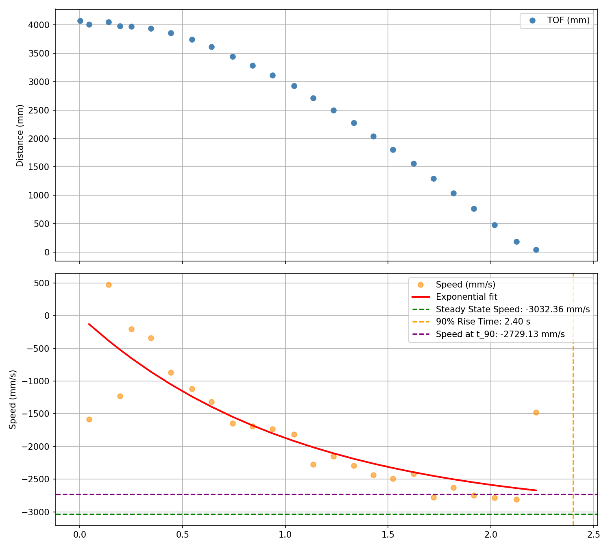
Next, I calculate the drag and mass estimations. We need to approximate the open-loop system with Newton's Second Law to get these estimations and define our state space matrices.
From lecture, we have the state space matrix derivation:
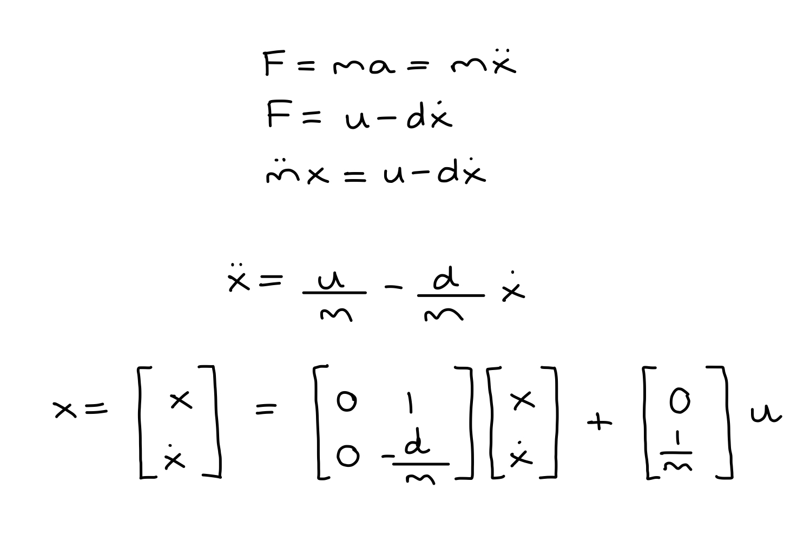
Here are the estimations for drag and mass:
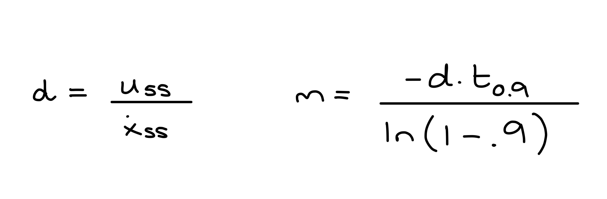
Now that I have the following values:
- Steady State Speed: 3032 mm/s or 3.03 m/s
- 90% Rise Time: 2.4 seconds
- Speed at 90% Rise Time: 2719 mm/s or 2.72 m/s
We can calculate the drag and mass estimations:
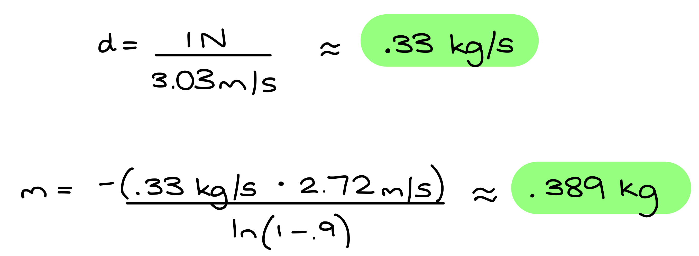
And our final state space matrices:
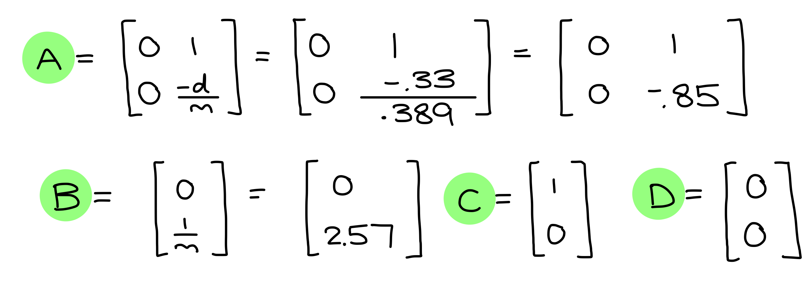
Task 2: Initialize KF (Python)
First I discretized my A and B matrices:
data = np.loadtxt('step_data_run.csv', delimiter=',', skiprows=1)
tof = data[:, 1] * 25.4
A = np.array([[0, 1 ],
[0, -0.85]])
B = np.array([[0 ],
[2.57]])
delta_t = 0.0955
Ad = np.eye(2) + delta_t * A
Bd = delta_t * BNext, I identified my C matrix and state vector:
C = np.array([[1, 0]])
x = np.array([[tof[0]], [0]])In order to get ballpark estimates for process and sensor noise covariance matrices, I used a sensor variance of 15 mm, after testing ToF readings when stationary.
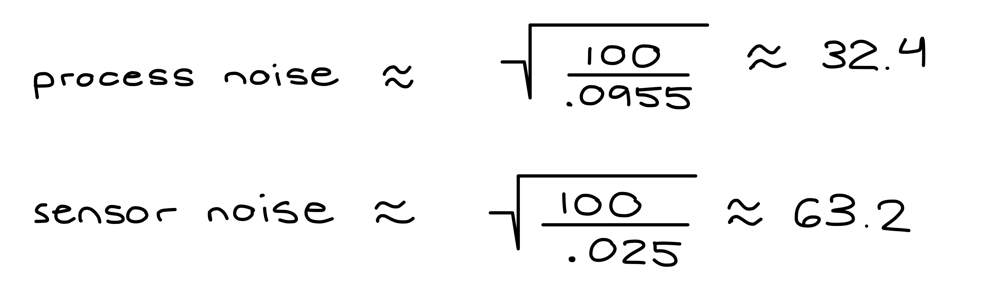
dt = .0955
dx = 25
sig1 = np.sqrt(100/dt)
sig2 = sig1
sig3 = np.sqrt(100/dx)
sigma_u = np.array([[sig1**2, 0], [0, sig2**2]])
sigma_z = np.array([[sig3**2]])Task 3: Implement and Test Kalman Filter in Jupyter (Python)
Next, I worked on implementing the Kalman Filter on the Python side. I used the following function:
def kf(mu, sigma, u, y):
mu_p = A.dot(mu) + B.dot(u)
sigma_p = A.dot(sigma.dot(A.transpose())) + sigma_u
sigma_m = C.dot(sigma_p.dot(C.transpose())) + sigma_z
kkf_gain = sigma_p.dot(C.transpose().dot(np.linalg.inv(sigma_m)))
y_m = y - C.dot(mu_p)
mu = mu_p + kkf_gain.dot(y_m)
sigma = (np.eye(2) - kkf_gain.dot(C)).dot(sigma_p)
return mu, sigmaNOTE: I spent a lot of time tuning and ended up setting d = 0.33 / 5.
My testing for the Python simulation is split into two parts: using data at ToF sensor speed (original step data) and data at PID loop speed.
Original Step Data: dt = 0.0955
sig1 = 32.3592, sig2 = 32.3592, sig3 = 4.4721
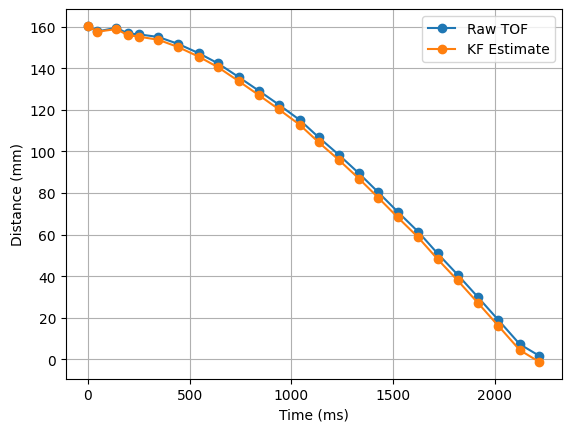
We can see that the KF model follows the ToF measurements very closely.
sig1 = 32.3592, sig2 = 32.3592, sig3 = 316.2278
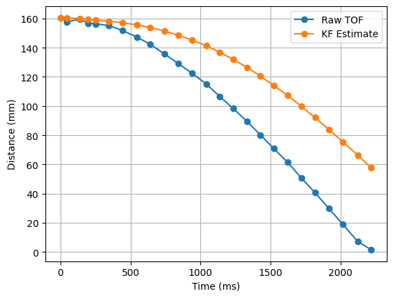
If we multiply sig3 by a factor of 100, the results depend much less on the ToF measurements.
Faster Step Data: dt = 0.008
sig1 = 110.2515, sig2 = 110.2515, sig3 = 4.4721
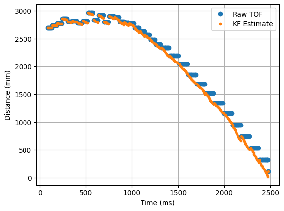
The KF model follows the ToF measurements well — it interpolates between them and corrects itself based on sensor measurements.
sig1 = 110.2515, sig2 = 110.2515, sig3 = 44721.3595
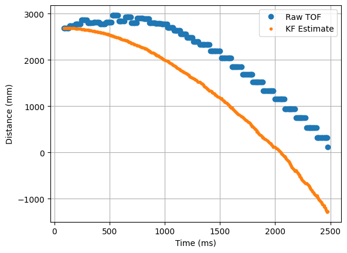
When I multiply sig3 by 10,000, the KF model diverges from the ToF measurements and no longer relies on sensor data at all.
Task 4: Implement Kalman Filter on the Robot
Next, I implemented the Kalman Filter on the Arduino side. I added a new start flag, kf_run_pid_flag, and three commands, similar to before:
START_KF_PID
case START_KF_PID:
success = robot_cmd.get_next_value(kf_pwm); if (!success) return;
kf_data_count = 0;
kf_start_time = millis();
tofSensor1.startRanging();
while (!tofSensor1.checkForDataReady()) { delay(1); }
kf_last_tof = tofSensor1.getDistance();
kf_run_pid_flag = 1;
break;STOP_KF_PID
case STOP_KF_PID:
kf_run_pid_flag = 0;
stop();
Serial.println("KF PID stopped");
break;SEND_KF_PID_DATA
case SEND_KF_PID_DATA:
for (int i = 0; i < kf_data_count; i++) {
tx_estring_value.clear();
tx_estring_value.append(kf_time_arr[i]); tx_estring_value.append(",");
tx_estring_value.append(kf_tof_arr[i]); tx_estring_value.append(",");
tx_estring_value.append(kf_pos_arr[i]); tx_estring_value.append(",");
tx_estring_value.append(kf_vel_arr[i]); tx_estring_value.append(",");
tx_estring_value.append(kf_pid_speed[i]);
tx_characteristic_string.writeValue(tx_estring_value.c_str());
delay(10);
}
break;State Matrices and Variables
I declared my state matrices and variables tuned from the Python simulation:
float kf_d = 0.33 / 5.0;
float kf_m = 0.389;
float kf_dt = 0.008;
float kf_dx = 5.0;
float sig1 = sqrt(100.0 / kf_dt);
float sig2 = sig1;
float sig3 = sqrt(100.0 / kf_dx);
Matrix<2,2> Ad = {1.0, kf_dt,
0.0, 1.0 - kf_dt * (kf_d / kf_m)};
Matrix<2,1> Bd = {0.0,
-kf_dt * (1.0 / kf_d)};
Matrix<1,2> C = {1.0, 0.0};
Matrix<2,2> sigma_u = {sig1 * sig1, 0.0,
0.0, sig2 * sig2};
Matrix<1,1> sigma_z = {sig3 * sig3};kalman_filter()
KalmanPair kalman_filter(Matrix<2,1> mu, Matrix<2,2> sigma, Matrix<1,1> u, Matrix<1,1> y, bool isUpdate) {
Matrix<2,1> mu_p = (Ad * mu) + (Bd * u);
Matrix<2,2> sigma_p = Ad * sigma * ~Ad + sigma_u;
if (!isUpdate) return { mu_p, sigma_p };
Matrix<1,1> sigma_m = C * sigma_p * ~C + sigma_z;
Matrix<1,1> sigma_m_inv = {1.0f / sigma_m(0,0)};
Matrix<2,1> kkf_gain = sigma_p * ~C * sigma_m_inv;
Matrix<1,1> y_m = {y(0,0) - (C * mu_p)(0,0)};
Matrix<2,2> I = {1,0, 0,1};
Matrix<2,1> new_mu = mu_p + kkf_gain * y_m;
Matrix<2,2> new_sigma = (I - kkf_gain * C) * sigma_p;
return { new_mu, new_sigma };
}runPIDWithKFIteration()
calculatePIDSpeedWithKF() is identical to calculatePIDSpeed() from Lab 5. Below is the iteration function that drives the main loop:
void runPIDWithKFIteration() {
// saturated data array
if (kf_data_count >= KF_DATA_LEN) {
kf_run_pid_flag = 0;
stop();
return;
}
// check for new ToF reading
bool update = tofSensor1.checkForDataReady();
// collect new ToF
if (update) {
kf_last_tof = tofSensor1.getDistance();
tofSensor1.clearInterrupt();
tofSensor1.stopRanging();
tofSensor1.startRanging();
}
Matrix<1,1> u_mat = {(float)kf_pwm};
Matrix<1,1> y_mat = {kf_last_tof};
KalmanPair result = kalman_filter(kf_mu, kf_sigma, u_mat, y_mat, update);
kf_mu = result.mu;
kf_sigma = result.sigma;
float kf_position = kf_mu(0, 0);
float kf_velocity = kf_mu(1, 0);
calculatePIDSpeedWithKF(kf_data_count, kf_position);
kf_time_arr[kf_data_count] = millis() - kf_start_time;
kf_tof_arr[kf_data_count] = kf_last_tof;
kf_pos_arr[kf_data_count] = kf_position;
kf_vel_arr[kf_data_count] = kf_velocity;
kf_motor_input_arr[kf_data_count] = kf_pwm;
kf_data_count++;
}Similarly to Lab 5, I only used PD control for this lab. After finishing the implementation, I began running tests with the new KF. I set the target distance to 12 in (304 mm) and tested with different values.
Run 1 — Kp = 0.3, Kd = 0.03
sig1 = 32.3592, sig2 = 32.3592, sig3 = 4.4721
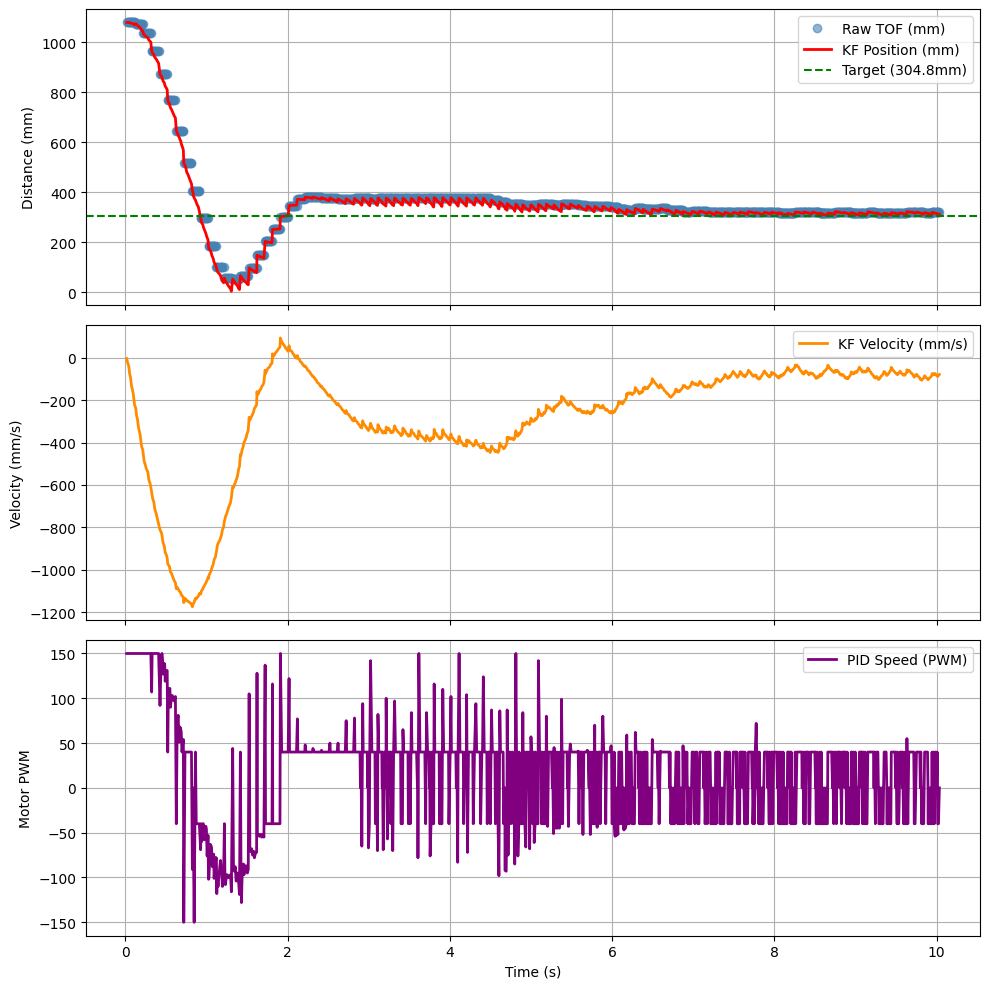
As we can see in the video, the car overshoots slightly but does a good job of tracking back and adjusting. In the graph, the KF values predict motion well and snap back to adjust to sensor measurements.
Run 2 — KF Model Only (sig3 × 10,000)
I wanted to test what would happen if I ran the KF model without relying on any sensor data. I pointed the car at a wall from a couple feet away and ran the PID while holding the car off the floor — only observing the KF model output, not the physical motion.
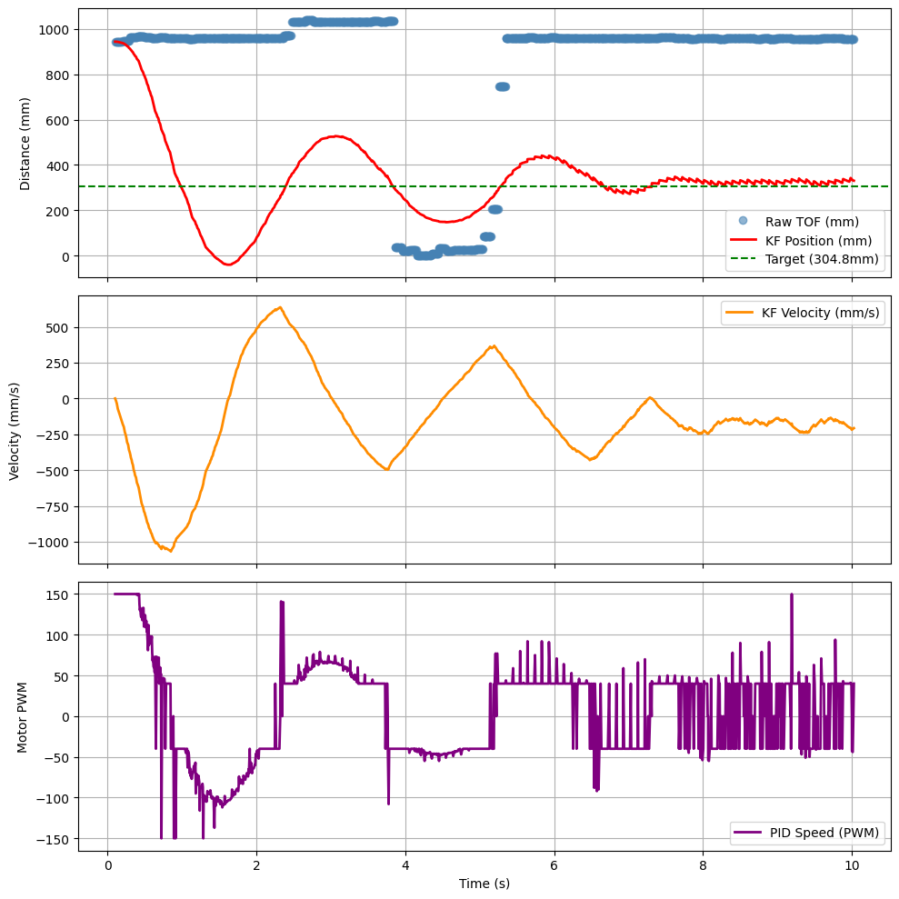
The KF model follows the intended motion system of stopping at a target of 1 foot from the wall. The ToF measurements can be ignored — while running, the car slipped and plotted stray points, but these did not affect the overall KF run.
Tuned Result
After spending time tuning, I achieved the following result:
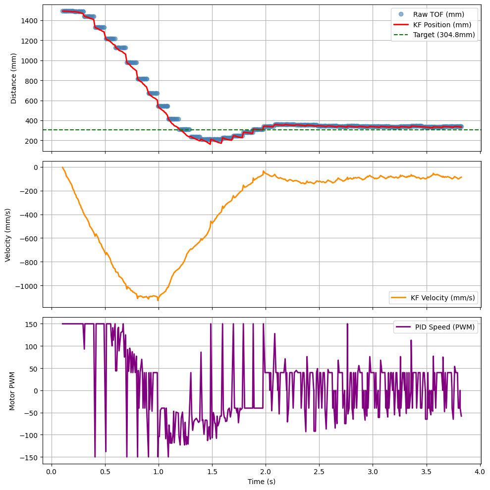
Collaboration
I referenced Lucca's website for guidance with testing the Kalman Filter and calculating my state matrices and variables. I also got a lot of help from Trevor during OH — he explained the KF function and helped me debug mistakes in my Python simulation. I spent the most time debugging the Python sim and tuning my d and sig3 values. Finally, I used Claude to style my website.